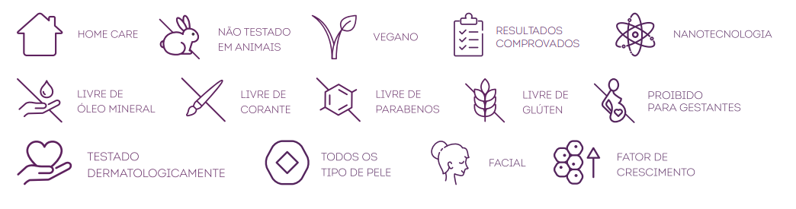

Reverse AH10:
Chega um momento em que a gente se olha no espelho e começa a notar pequenas mudanças... linhas que antes não estavam ali, a pele menos firme, um certo cansaço no olhar. Isso é natural — mas não precisa ser definitivo.
O Reverse AH10 foi criado para mulheres como você, que valorizam sua beleza, sua história e sabem que cuidar de si mesma é um ato de amor e autoestima.
Desenvolvido para quem busca uma pele mais firme, hidratada e com aparência jovem, ele age profundamente para reduzir rugas, minimizar linhas de expressão e combater a flacidez de forma eficaz.
Sua fórmula leve e de rápida absorção proporciona um toque aveludado e sensação imediata de frescor. Ideal para todos os tipos de pele, é o tratamento perfeito para quem não abre mão de qualidade, segurança e beleza natural.
üå± Vegano, dermatologicamente testado, livre de parabenos e crueldade animal. Experimente agora e veja sua pele transformar-se diante dos seus olhos!
Com uma fórmula inteligente e inovadora, que reúne 10 tipos de ácido hialurônico, colágeno biomimético, Nano Retinol-like e niacinamida, ele age nos sinais do tempo com delicadeza e profundidade, revitalizando a pele de dentro para fora.
- 10 tipos de ácido hialurônico
- Colágeno e niacinamida
- Vegano, sem parabenos e livre de crueldade
- Textura leve, rápida absorção
Com o passar do tempo, é natural que a pele perca firmeza, hidratação e luminosidade. Pensando nisso, o Creme Anti-Idade Reverse AH10 da Extratos da Terra foi desenvolvido para transformar a sua rotina de cuidados em um verdadeiro tratamento de rejuvenescimento.
Possuindo os benefícios que sua pele tanto merece:
- Redução visível de rugas e linhas
- Pele mais firme, hidratada e iluminada
- Combate o estresse oxidativo
- Indicado para todos os tipos de pele
Confiança Comprovada:
O resultado? Uma pele visivelmente mais firme, hidratada e radiante. A textura leve e o toque aveludado tornam o uso diário um momento de prazer e conexão consigo mesma.
Mais do que um creme, o Reverse AH10 é um convite para você se colocar em primeiro lugar. Com tecnologia avançada, testes dermatológicos e ingredientes veganos, ele traz a segurança e a confiança que você merece, para continuar se sentindo linda em todas as fases da vida.
- Estimula a produção de colágeno: Obtenha uma pele mais lisa e jovem com o uso contínuo.
- Melhora a firmeza e elasticidade da pele: Retorne à elasticidade volumosa da pele jovem.
- Ação antioxidante e hidratante: Penetra nas camadas mais profundas da pele para uma hidratação duradoura e nutrição intensiva.
- Reduz rugas e linhas de expressão: Diminui visivelmente os sinais de envelhecimento na pele.
- Dá volume e preenchimento da pele: Proporciona um aspecto mais cheio e rejuvenescido.
- Aumenta a elasticidade e a firmeza da pele: Ajuda a manter a pele tonificada e jovem.
- 10 tipos de ácido hialurônico: Oferece hidratação em diferentes níveis da pele.
- Duplo efeito retinol-like: Melhora a textura e aparência da pele sem os efeitos colaterais do retinol.
- Promove hidratação imediata e prolongada: Mantém a pele suave e hidratada ao longo do dia.
- Ação antirrugas e firmadora: Reduz a aparência de rugas e melhora a firmeza da pele.
- Diminui as manchas da idade: Uniformiza o tom da pele e reduz a hiperpigmentação.
- Diminui o envelhecimento das células: Ajuda a retardar os sinais de envelhecimento celular.
- Ação antioxidante: Combate os radicais livres que danificam a pele.
- Base vegetal e biodegradável: Respeita o meio ambiente enquanto cuida da sua pele.
- Combate danos provocados pelo cortisol: Neutraliza os efeitos negativos do estresse na pele.
- Deixa a pele macia e sedosa: Proporciona uma sensação de suavidade e hidratação logo nas primeiras aplicações.
- Mix de Ácido Hialurônico:Formulado com compostos biovetorizados pelo silício e colágeno nanoencapsulado para um efeito de lifting imediato e duradouro
- Niacinamida e Nanovitamina A: Melhoram a barreira natural da pele, reduzindo a desidratação e promovendo uma textura uniforme e luminosa.
- Pró-aging 360:Tem ação pró-aging 360°, agindo na reestruturação da pele da área dos olhos ao pescoço. Os benefícios visíveis do ativo são uma pele mais jovem, diminuição da aparência, quantidade e profundidade das rugas e diminuição da flacidez, com consequente aumento da firmeza da pele.
- Ômega Plus:Rico em ômegas 3, 6, 7 e 9, que atuam como um emoliente biomimético, ou seja, imitando a hidratação natural da pele. Isso garante a hidratação imediata e a reposição desses ômegas na barreira cutânea, o que reduz a desidratação e as linhas de expressão.
- Origem: Produto vegano,livre de parabenos,biodegradável,testado dermatologicamente
- Rendimento:Aproximadamente 100 aplicações
- Composição: Água, Álcool Cetoestearílico, Glicerol, Carbonato de Dicaprila, Etilcaproato de Cetila, Nicotinamida, Caprilato de Propilheptilo, Fenoxietanol, Acetato de Tocoferila, Ésteres de Jojoba, Colágeno Hidrolisado, Monoestearato de Glicerila, Crospolímero de Acrilatos/ Acrilato de Alquila C10-30, Óleo da Semente do Girassol, Cera da Semente de Girassol, Cera de Carnaúba, Manteiga da Semente de Cupuaçu, Ácido Linoleico, Ácido Oleico,etc.
- Para saber mais sobre a ficha técnica clique aqui!
- Pode ser usado por gestantes?
Não é recomendado para gestantes. - Pode ser usado por lactantes?
Não existem estudos de segurança com lactantes, sendo necessárias a avaliação e a orientação de um médico antes do uso do creme durante a lactação - Pode ser usado em qualquer biotipo e fototipo?
Sim, o produto pode ser utilizado por qualquer tipo e fototipo de pele - Qual a porcentagem de ácido hialurônico?
O creme possui altas concentrações de ativos, totalizando 15%, dos quais o ácido hialurônico corresponde a 5%. Muitos estudos foram realizados para que o creme anti-idade tivesse uma combinação perfeita entre todos os ingredientes da formulação e para que você realmente sinta a diferença na pele ao usá-lo.
Características

Avaliações
Camila R.
“Simplesmente maravilhoso! Minha pele está mais firme e hidratada. Em menos de um mês, senti a diferença.”
Juliana M.
“Uso diariamente e recomendo. O toque é leve, a absorção é rápida e a pele fica com um aspecto lindo.”
Ana Paula S.
“Já testei vários e esse é o único que cumpriu o que prometeu. Minhas linhas de expressão suavizaram bastante.”
Fernanda G.
“A textura é incrível e o efeito tensor é visível. Estou apaixonada!”
10.000+ mulheres satisfeitas
Testado e aprovado! Resultados reais em até 28 dias.